A2 Exploratory Analysis: Historic Redlining in Greater Boston and Present-Day Municipal Patterns
By Gabriela Miranda
Dataset + Historical Motivation
This project explores how historical housing discrimination may still shape spatial and municipal patterns today. I use a historical redlining dataset that contains polygon boundaries and HOLC grades (A-D) for neighborhoods in the Greater Boston region, and I pair it with a municipality-level dataset that includes population (1990-2020) and housing totals. The goal is to understand the structure of the historical dataset, check data quality and coverage, and then investigate whether simple contemporary municipal characteristics (like population) relate to the extent of redlined area.
Motivating Questions
-
To what extent did historic housing discrimination contribute to today's racial wealth gap in Boston through homeownership and home value appreciation—and what policies are suggested for repair?
Motivation: The Federal Reserve Bank of Boston report is a landmark analysis of the racial wealth gap, and explicitly links fair access to housing to wealth-building. Embrace Boston's report also documents harms and proposes redress steps, so a good question is how housing pathways-ownership access, appreciation, displacement- map onto wealth outcomes and policy recommendations.
Evidence for motivation (sources): The Color of Wealth in Boston (Federal Reserve Bank of Boston); Report on Housing Harms for Black Bostonians and Ways to Redress Them (Embrace Boston), especially the housing/transportation section noted in your prompt.
-
How strongly do historic redlined neighborhoods in Greater Boston differ today in housing affordability and stability compared with areas that were graded more favorably?
Motivation: The description of the redlining dataset states that HOLC/FHA-era grading has cemented long-run access to credit and investment and that scholars link it to modern inequalities. I want to test whether those patterns show up today in outcomes like rent burden, eviction risk, homeownership, or price appreciation.
Evidence for motivation (sources): Redlining data for Greater Boston (dataset description); Timeline of Housing Discrimination (Fair Housing Center of Greater Boston); NPR segment on Rothstein's The Color of Law.
-
Did “exclusionary by design” suburban zoning contribute to persistent segregation by limiting where multi-family housing could be built—and does that still shape who can access high-opportunity communities today?
Motivation: The zoning report/video clearly establishes the notion of zoning as a tool of exclusion on the basis of race/class/family from 1920 to the present, and Boston Magazine highlights the reasons for the long-standing nature of the segregated pattern. The goal here is to link the mechanism of historical exclusion (zoning restrictions) to the patterns of current accessibility.
Evidence for motivation (sources): Exclusionary by Design (video + report); How Has Boston Gotten Away with Being Segregated for So Long? (Boston Magazine).
Overview: shape, structure, and data quality
Count of HOLC polygons by grade
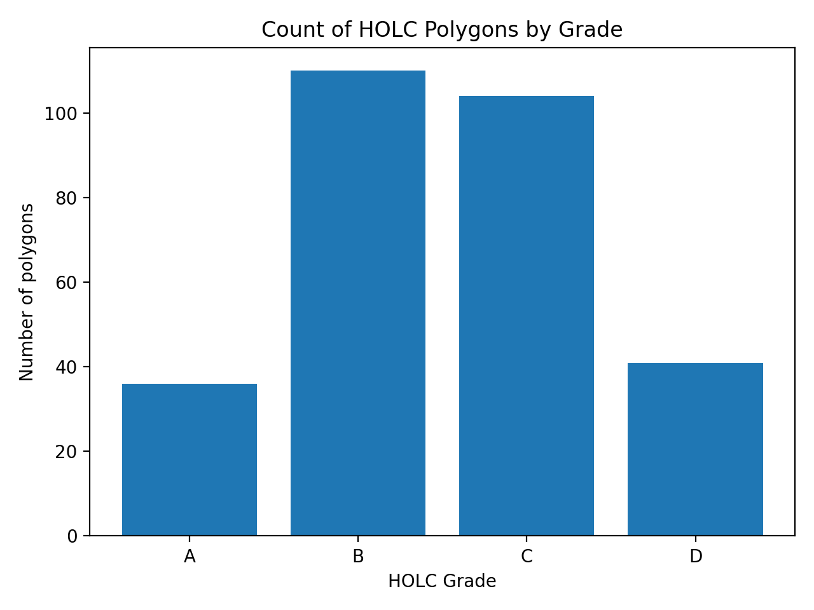
Caption: The dataset contains polygons graded A, B, C, and D. The distribution is not uniform: B and C polygons appear most frequently, while A and D appear less often. This provides a first “shape” overview of the dataset's composition before interpreting any spatial patterns.
Total polygon area by HOLC grade (relative units)
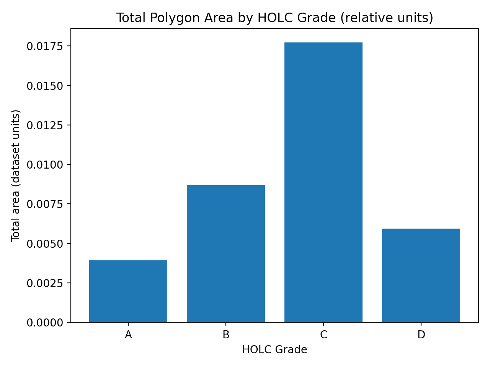
Caption: Summing polygon areas by grade provides a complementary view: even if a grade appears fewer times, it may cover substantial geographic space (or vice versa). This check helps avoid over-interpreting raw counts alone.
HOLC polygon coverage map (A→D colormap)
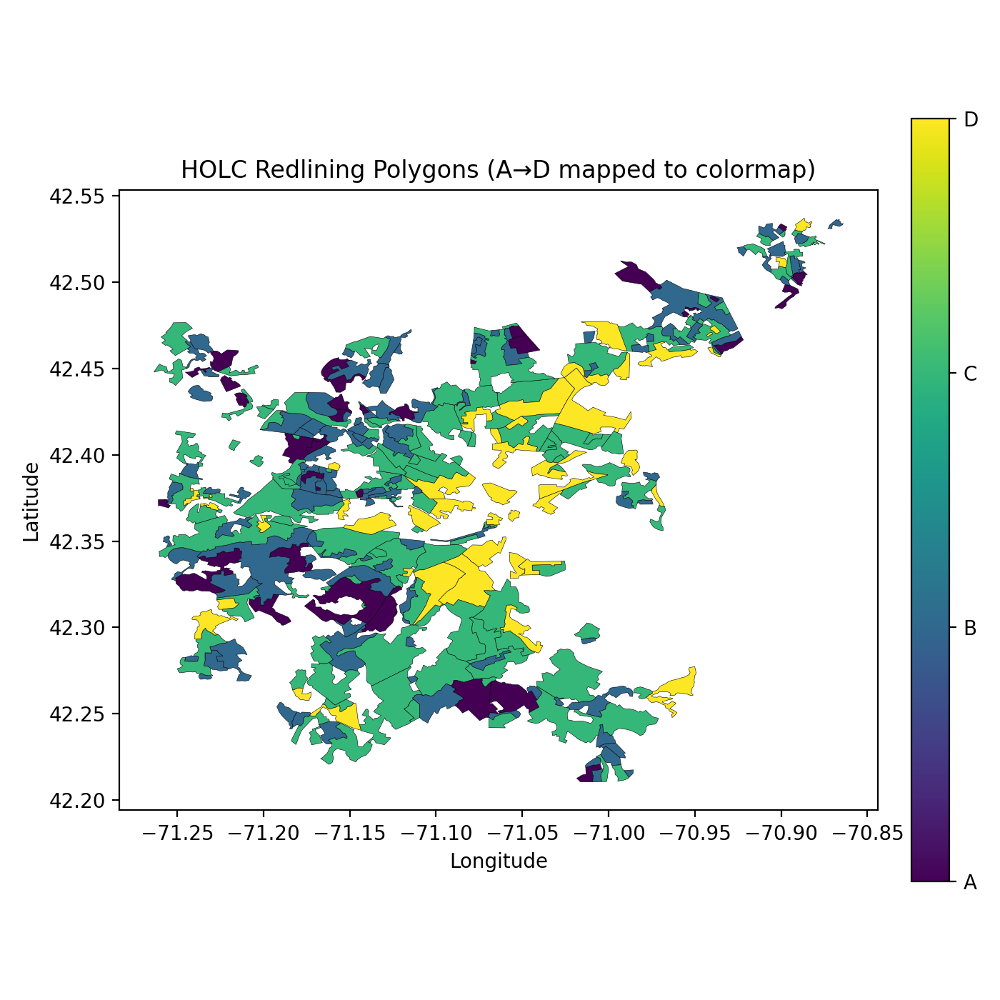
Caption: Plotting all polygons colored by grade serves as a geographic sanity check. The dataset covers a subset of municipalities in the region (not the entire MAPC area), and the spatial clustering suggests that grades are not randomly assigned across space (important context before doing town-level joins).
Municipal population in 2020 (raw vs log10)
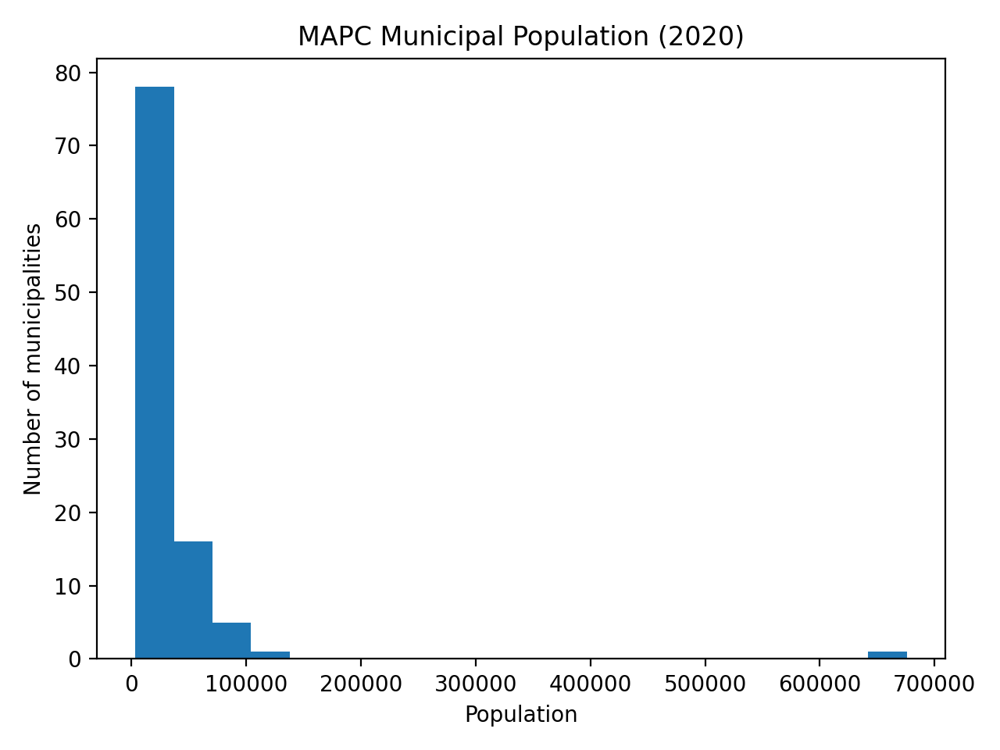
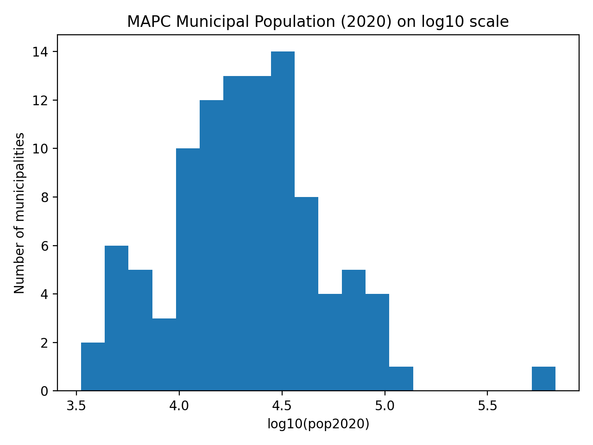
Caption: The municipal population dataset spans a wide range of town sizes. This histogram shows that most municipalities cluster at lower-to-mid populations, with a long tail of larger cities. Since the population is highly skewed, later comparisons should consider log-scaling. The log10(pop2020) histogram is closer to symmetric and is typically easier to work with for regression or correlation exploration. This supports using log(population) rather than raw population when checking relationships.
Question-driven exploration
Population trajectories by municipality (1990-2020, log scale)
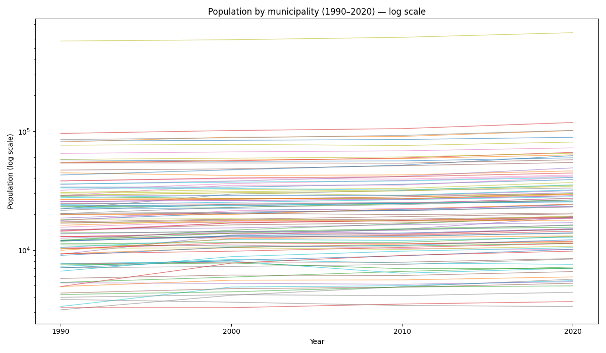
Caption: This plot gives context for contemporary municipal scale and growth: on a log scale, most municipalities show gradual growth from 1990 to 2020, while a few consistently sit far above the rest. The key takeaway is that “municipality size” varies by orders of magnitude in this region; later comparisons between population and redlining exposure should therefore consider log(population) rather than raw population to avoid having a few large cities dominate the pattern.
County population totals over time (grouped bars)
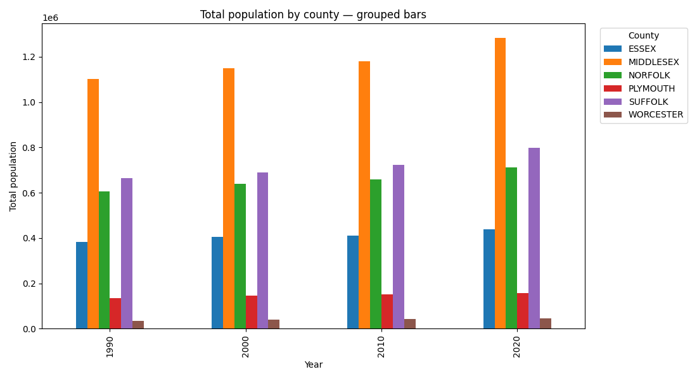
Caption: Aggregating municipal populations to the county level shows that the region's population is concentrated in a few counties. Middlesex is the largest throughout the period and grows steadily, while Suffolk and Norfolk also contribute large shares. This establishes a “where people live” baseline: even if redlining polygons only cover some municipalities, those municipalities may sit inside counties with very different population scale and growth.
County population totals over time (stacked bars)
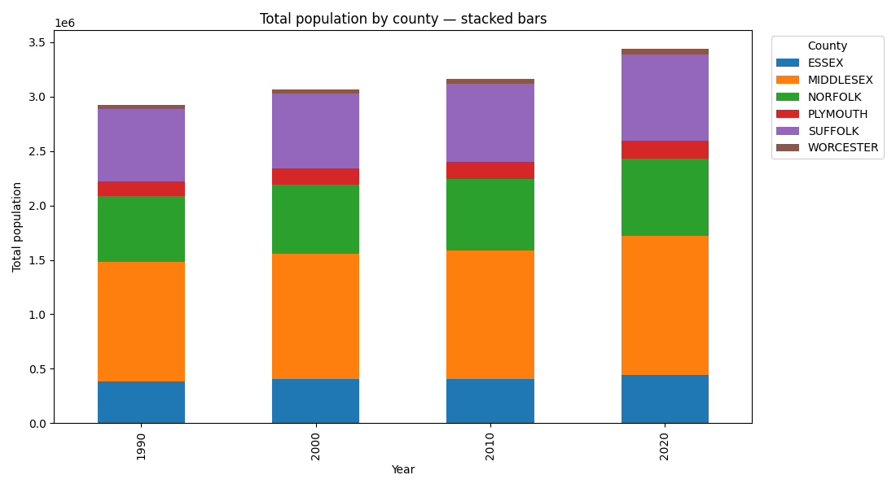
Caption: The stacked view emphasizes the region-wide growth trend and how each county contributes to the total. The overall bar height increases from 1990→2020, indicating regional population growth. Middlesex remains the dominant component, but Suffolk and Norfolk are also consistently large contributors. This provides additional context for interpreting where redlining exposure might matter most in terms of the number of residents potentially affected.
Building a municipality-level measure of redlining exposure
Redlining grade composition + total graded area + area-per-capita
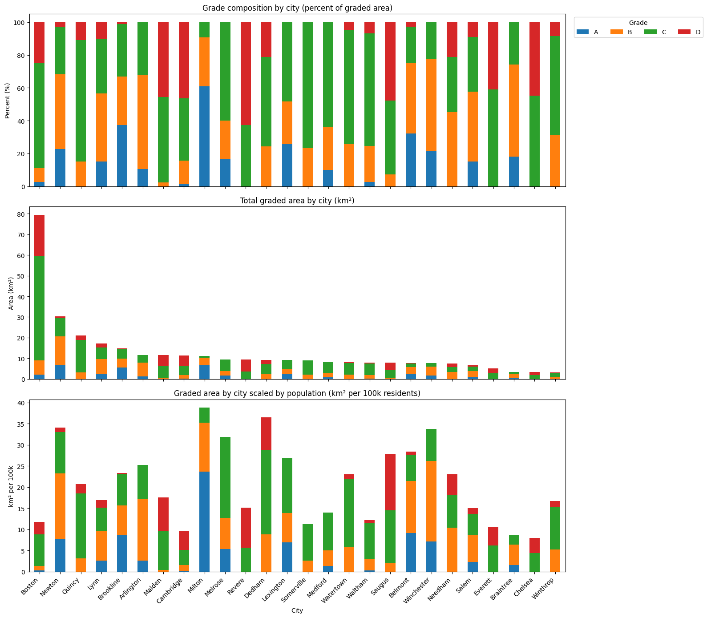
Caption: This multi-panel figure constructs and sanity-checks the core derived variables used later in the analysis.
- Top (composition): For each municipality that has HOLC polygons, I compute the percent of graded area that falls into A/B/C/D. The mixture varies substantially across municipalities, suggesting that grade assignment was not uniform across places.
- Middle (total graded area): Municipalities differ dramatically in how much total area is covered by HOLC polygons, so raw area alone can be misleading.
- Bottom (graded area per 100k residents): Normalizing by population helps compare municipalities on a more “resident-scaled” basis, revealing cases where a municipality may have modest total graded area but high graded-area-per-capita (or the reverse). This normalization is important because otherwise large municipalities mechanically appear “more exposed” simply due to scale.
Does population relate to redlining exposure?
Population vs percent (C+D) graded area (with best-fit line)
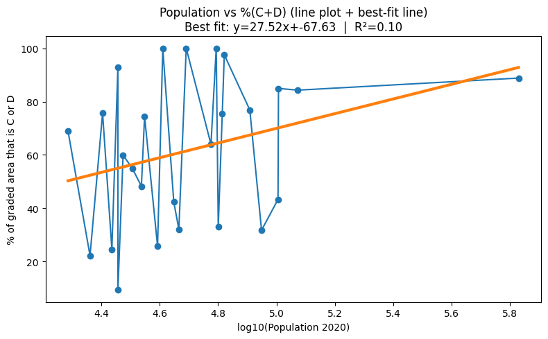
Caption: This visualization compares log10(population 2020) to the share of a municipality's graded area that is C or D (interpreted as “declining/hazardous” categories). The fitted line slopes upward, but the relationship is weak (R² ≈ 0.10), suggesting population explains only a small fraction of variation in C+D exposure. Substantively, this indicates that municipality size alone does not determine how heavily historically disinvested grades appear in the HOLC coverage—there is meaningful heterogeneity among municipalities of similar size. (Note: the connected line between points visually implies an ordering; interpret this as a set of municipalities plus a trend line, not as a time series.)
Population vs percent D graded area (with best-fit line)
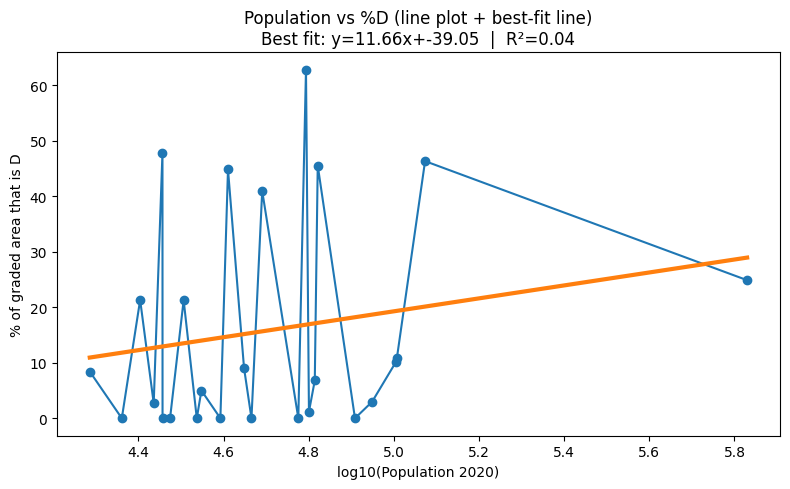
Caption: Repeating the analysis using only D (the most severe grade) further weakens the relationship (R² ≈ 0.04). Even though the best-fit line is slightly positive, the population provides almost no predictive power for D exposure. This pushes the analysis toward “place-specific” explanations (local political economy, neighborhood-level characteristics, and historical housing market dynamics) rather than simple size-based narratives. (Same note: interpret the marks as municipalities; the best-fit line is the main summary.)
Takeaways
Across the municipalities covered by the HOLC polygon dataset, redlining exposure varies widely in both composition (A/B/C/D mix) and scale (total graded area and graded area per capita). When comparing exposure to the present-day municipality population, the association is weak, especially for the most severe grade D, implying that population alone does not explain where hazardous grades were assigned. This motivates follow-up analyses that incorporate other modern variables (e.g., affordability, demographics, housing stock, or zoning constraints) and/or more geographically granular outcomes to test longer-run persistence mechanisms more directly.
These figures collectively build a bridge from the historical redlining layer to my three big questions by:
- Establishing the contemporary “units” we're comparing (municipalities/countries and their population scale) and then
- Constructing and validating a usable measure of redlining exliosure that we can later connect to modern outcomes.
The figures give baseline context on population change and where people are concentrated over time, which matters for Q1 and Q2 because any long-run wealth or housing-stability impacts will affect very different numbers of residents depending on the municipal/county population scale.
The multipanel figure is the key technical step for all three questions: it turns the HOLC polygons into interpretable municipality-level metrics (grade composition, total graded area, and exposure normalized per capita), letting us compare places on a fairer footing, especially important for Q3 because “total graded area” can be confounded by municipality size.
The following population vs (C+D) figures then directly probe a simple version of Q3 by testing whether contemporary municipal size (log population) explains exposure to historically disinvested grades (C+D or D); the weak relationships (low R²) suggest population alone is not the driver, which supports the idea that other mechanisms, like local political economy, housing market structure, and potentially zoning/exclusionary policies, are more important in explaining persistent spatial inequality. Together, these figures partially address Q1-Q2 by identifying where historical disinvestment is concentrated (and at what scale per resident), but they also show that to actually test wealth gaps and affordability/stability outcomes, you'll need to merge in modern socioeconomic variables.
Follow-up questions raised by these results:
- Outliers: Which specific municipalities are “high exposure” (high %D or %C+D) relative to their population, and what historical or policy factors explain them?
- Modern outcomes: Do high-exposure municipalities (or neighborhoods, if you go finer than municipal level) have lower homeownership rates, higher rent burden, higher eviction rates, or lower property-value appreciation today (Q1-Q2)?
- Mechanisms: If population doesn't explain exposure, what does—racial composition historically/now, proximity to industry, transit access, municipal fiscal capacity, or political boundaries?
- Zoning & segregation (Q3): Are high-exposure municipalities surrounded by low-exposure suburbs with restrictive zoning, and does that pattern correlate with contemporary segregation measures?
- Within-city variation: Municipal aggregation may hide neighborhood-level patterns; within Boston/Cambridge/etc, do areas graded D show systematically different present-day outcomes than areas graded A/B after controlling for location?